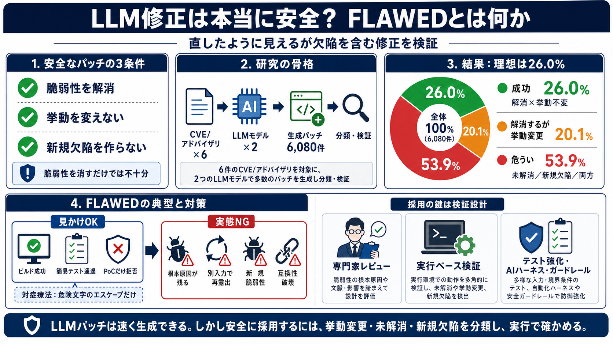

必須 i
脆弱性が解消される（根本原因に対応）

LLM修正は本当に安全？
LLMが脆弱性パッチを自動生成したとき、「直したように見えるが欠陥を含む」修正（FLAWED）がどれくらい起きるのかを、6つの複雑なCVEで検証した研究を整理します。
何を“安全”と呼ぶ？
パッチは「脆弱性を消す」だけでは不十分で、意図した挙動を変えないことと、新しい欠陥を生まないことが必要です。
“塞いだ”だけ？
LLMの修正は、テストやPoCに対しては通っても、別の入力で同じ欠陥が再露出することがあります。
検証の骨格
研究では、最近公開された複雑脆弱性6件（合計6つのCVE/アドバイザリ）に対して、フロンティア級サイバー推論モデル2種類で合計6,080件のパッチを生成し分類します。
成功率は低め
平均すると、「脆弱性を完全に解消し、しかも挙動を実質的に変えない」パッチは26.0%にとどまりました。
半数以上が危うい
「未解消／新たな脆弱性を作る／両方」が53.9%で、LLM修正は“期待通り”に機能しないケースが半数超でした。
FLAWEDの典型
根本原因に踏み込まず、入力の一部だけを“回避”する修正が混ざります。
“修正”と“安全化”は別物
LLM生成パッチは、表面上は正しく見えても、挙動変更や脆弱性温存（fragile）が起きるため、防御の目的に対して一致しないことがあります。
ボトルネックは検証
生成は速くなっても、採用に必要な検証が追いつかないのが問題です。Anthropicからのフィードバックでも「レビュー（目視）ではなく実行ベースへ」が示されています。
運用面の副作用
挙動変更があると、セキュリティ境界だけでなく機能要件や互換性、利用者体験にも影響します。
結論：採用は設計で決まる
LLMパッチを“全面的に信頼”するのは危険で、研究が示す通り最終的には専門家レビューと、実行ベースの検証・テスト強化が中核になります。
参考
本デッキは、ユーザー提供テキスト（Off-by-1 Labs のブログ内容の要約）に基づき構成しています。元記事の確認で、詳細（5シナリオ分類など）を補ってください。
No references found